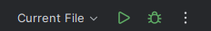
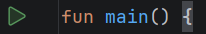

Find a Green Triangle
IntelliJ shows a green triangle when it knows how to run the current Kotlin file. You can use either of the two locations below. Both start the same main function.

Current File.
fun main.Read the Output
Suppose the file contains this program:
fun main() {
println("Kotlin is running")
}After you click Run, IntelliJ opens the Run area near the bottom of the window. Look there for Kotlin is running. The text in the editor is the program; the text in the Run area is output produced by that program.
Run, Observe, Revise
Running is part of writing a program, not only something done at the end. Make one small change, run again, and compare the new output with what you predicted. If the triangle is missing, first check that the file contains fun main() with a body in curly braces.
Practice
- Where are the two Run buttons shown above?
- If you change the argument to
"Second run", what output should you expect? - What function does IntelliJ start when you run this file?
Check your answers
1. One is in the top toolbar; the other is beside fun main in the editor.
2. The Run area should show Second run.
3. IntelliJ starts the main function.